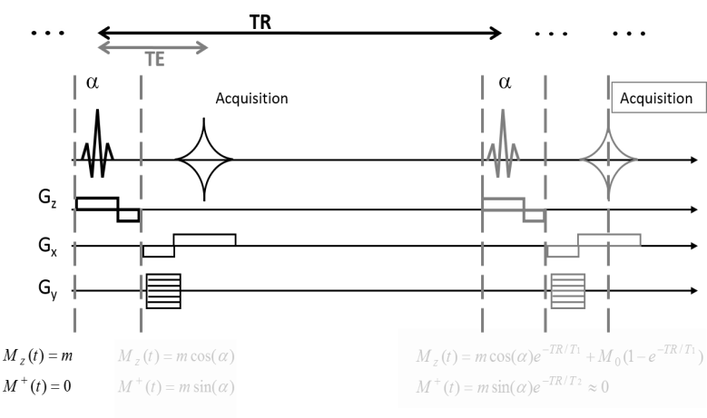

MR Toolkit - Image Contrast
Table of Contents
Questions to be answered in groups of three with the use of any material you might want to use. You have 30 mins to submit the answers, as a team you have to agree on the response given.
Image Contrast Tutorial

1. Single Slice GRE Sequence
Consider the properties of two different tissue types:
| Tissue 1 | Tissue 2 | |
|---|---|---|
| T1 (ms) | 1300 | 1300 |
| T2 (ms) | 60 | 100 |
When adjusting sequence parameters, which of the three options below would yield the greatest contrast between both tissues?
- A. TR = 1000ms; TE = 77ms and α=90°
- B. TR = 1000ms; TE = 160ms and α=90°
- C. TR = 1000ms; TE = 0ms and α=45°
2. Steady State Signal
The signal of a single excitation at time TE is given by \(M_{0}sin(\alpha)e^{- \frac{\text{TE}}{T2}}\). If you repeat the sequence until it reaches steady state, what of the following expressions better describes your signal intensity?
- A. \(M_{0}sin(\alpha)e^{- \frac{\text{TE}}{T2}}(1 - e^{- TR/T1})\)
- B. \(M_{0}sin(\alpha)e^{- \frac{\text{TE}}{T2}}\frac{1 - e^{- TR/T1}}{1 - {cos(\alpha)e}^{- TR/T1}}\)
- C. \(M_{0}sin(\alpha)e^{- \frac{\text{TE}}{T2}}\)
3. Signal intensity, T1 relaxation and flip angles.
Grey matter has a T1=1330ms (@ 3T). When imaging with a TR=2000ms (standard fMRI TR), the flip angle that generates the maximum signal for that tissue is 77°.
Signal Intensity and T1 relaxation times.
If grey matter tissue had a longer T1 (for example when imaging @ 7T), the optimum flip angle for the same TR would be:
- A. Bigger than 77°
- B. 77°
- C. Smaller than 77°
Signal intensity and Flip Angles.
If the sequence were faster (for example with multiband 6), the optimal flip angle for the same tissue would be:
- A. Bigger than 77°
- B. 77°
- C. Smaller than 77°
Can you explain qualitatively why we need to adapt flip angles?
2D vs. 3D encoding
If two tissues have the same T2 but different T1 values, of 700 and 1100ms, respectively (WM and GM at 3T), then the optimum contrast when using a GRE sequence with TR=600ms is achieved with a 90° flip angle.
Acquisition Time
When 3D encoding a volume of 200x200x200 pixels, how long does the acquisition last?
- A. 400 minutes.
- B. 80.000 minutes.
- C. 2 minutes.
Flip Angles
To accelerate the previous acquisition the TR could be reduced to 6ms, in which case the optimum flip angle would be:
- A. The same.
- B. Reduced.
- C. Increased.
Contrast
When comparing the acquisitions with TR=600 and TR=6ms , the signal difference between tissues with T1=700ms and T1=1100ms will be 15.5 and 1.7, respectively. Which of the acquisitions has the maximum contrast in a given amount of time? (note that the SNR for a given number of averages, Nav, increases \(\sqrt{N_{\text{av}}}\)).
- A. 6ms.
- B. 600ms.
- C. They have the same contrast.
Supplementary Information
An Ernst Angle calculator can be found here.
The following information only concerns those attending the Toolkit.
After the first attempt you can find some MATLAB scripts to help you interact with this tutorial. They can be found under:
H:\common\temporary\4Toolkit\TutorialImageContrast
- Copy the folder to your desktop.
- Open MATLAB, and the script Macro2.m
- Make sure your current directory is where the script Macro2.m is located.
The code is organized into cells. You can run the code of each cell by simply pressing ctrl+enter. You can change parameters and rerun the code following the instructions in the script.